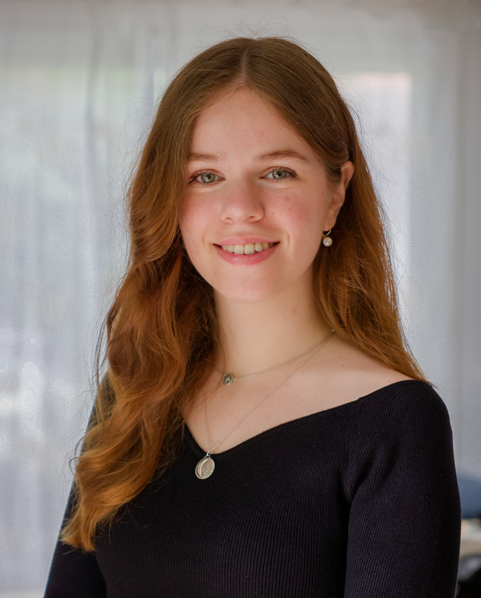

Tamara Paris
Hello! I am a first-year PhD student in Computer Science and Engineering in a joint program between McGill University and Université Paris Cité. I am co-supervised by AJung Moon, Jin Guo, Geoffroy Couteau and Michele Orrù. My PhD research focuses primarily on technical AI governance, at the intersection of AI ethics and theoretical computer science. My PhD project is supported by the OBVIA scholarship program and I'm also part of the Mila Québec Artificial Intelligence Institute and IRIF (Institut de Recherche en Informatique Fondamentale).
I also organize the AI Governance Reading Group and the Responsible AI Lunch at Mila with Veronica Xia :)

Publications
Contact
Email: tamara.paris@mail.mcgill.ca